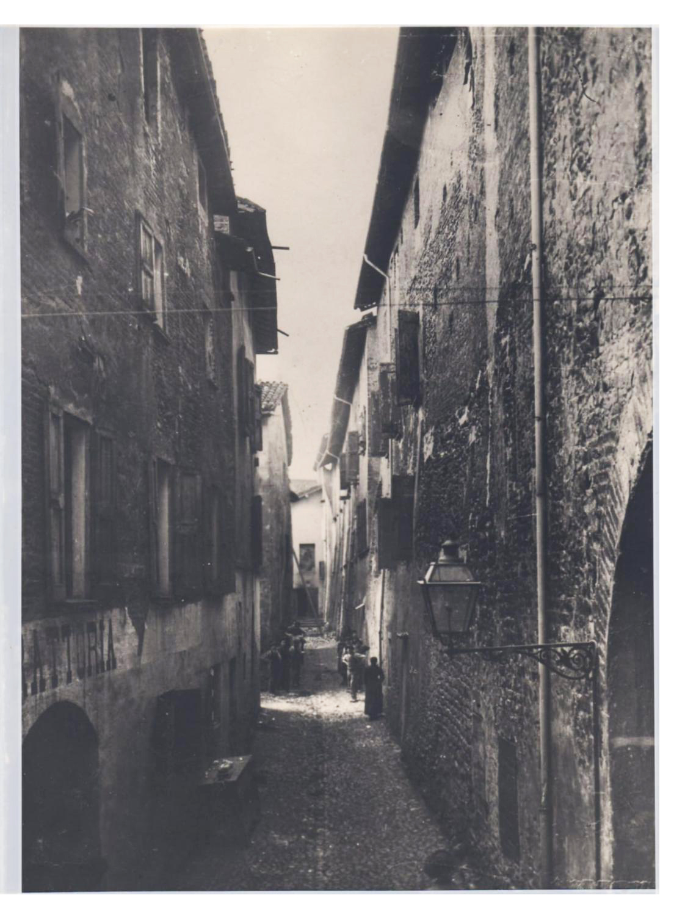

TAPPA 10: Piazza Fiume
10.1 - Piazza Fiume

Questo luogo in origine non era una piazza ma il quartiere ebraico di Scandiano, densamente abitato e pieno di abitazioni costruite le une a ridosso delle altre. Qui fin dalla seconda metà del 1400 sorgevano le “contradelle”, i fabbricati dell’allora piccolo borgo medioevale. La Comunità ebraica, nel momento di massima presenza, nel 1770, raggiunse le “112 bocche”. Il quartiere ebraico scandianese, anche se denominato comunemente “ghetto” fu sempre un quartiere aperto, da cui gli ebrei potevano entrare e uscire senza restrizioni, per volere dei Boiardo, a differenza dei ghetti ebraici di altre città in cui gli abitanti venivano sottoposti a restrizioni di libertà di movimento.
Scomparsa la comunità ebraica, i caseggiati erano diventati insicuri, malsani e privi dei minimi requisiti igienici e l’Amministrazione comunale di allora ne decise la demolizione che avvenne nel 1914.
La piazza rimase per qualche decennio uno spazio vuoto ma importante e vissuto dalle tante famiglie che abitavano nei fabbricati che la circondano.
Nell'angolo a sud ovest, all'ombra del Torrione della Rocca, si trova ancora oggi l'edificio della casa Padoa-Almansi, una delle più antiche famiglie ebree scandianesi. Una targa sul muro esterno della casa (che oggi ospita un ristorante) ne ricorda la storia.
A testimoniare la presenza della comunità ebraica rimane il Cimitero ebraico.
Nessun Ebreo o Ebrea fu deportato/a da Scandiano nei lager nazisti, poiché la comunità ebraica si era già dissolta tra la fine dell’800 e i primi del ‘900, a seguito di trasferimenti nelle vicine Modena, Carpi e Reggio Emilia.
Ma ci furono Ebrei di origine scandianese vittime della Shoah.
Nell’anno scolastico 2023/2024 alcuni studenti dell’Istituto Superiore “Piero Gobetti” hanno sviluppato un progetto-ricerca sulla famiglia ebrea di Scandiano: i Corinaldi.
Di alcuni di loro, come Rosa e Benedetto Corinaldi, esistono ancora le tombe nel vecchio cimitero ebraico di via Manzoni, ma per altri della famiglia, emigrati verso Venezia e Milano tra la fine dell’800 e i primi anni del ‘900, come Gustavo Corinaldi, figlio di Benedetto e Rosa; Rosita Corinaldi, il marito e i loro quattro bambini e Gino Corinaldi, la vita ha avuto una tragica fine nel campo di concentramento di Auschwitz dove furono deportati da Milano e da Venezia.
A Venezia, nel Sestiere di Cannaregio di fronte al civico 5999 vicino alla Chiesa di Santa Maria dei Miracoli, sono poste ben sette pietre d’inciampo che ricordano sette membri della famiglia Corinaldi: Rosita, la mamma Elena Fano, il marito Mario Dina, i figli Guido, Giorgia, Anna e Leone, rispettivamente di 14, 10, 7 e 1 anno.
Scomparsa la comunità ebraica, i caseggiati erano diventati insicuri, malsani e privi dei minimi requisiti igienici e l’Amministrazione comunale di allora ne decise la demolizione che avvenne nel 1914.
La piazza rimase per qualche decennio uno spazio vuoto ma importante e vissuto dalle tante famiglie che abitavano nei fabbricati che la circondano.
Nell'angolo a sud ovest, all'ombra del Torrione della Rocca, si trova ancora oggi l'edificio della casa Padoa-Almansi, una delle più antiche famiglie ebree scandianesi. Una targa sul muro esterno della casa (che oggi ospita un ristorante) ne ricorda la storia.
A testimoniare la presenza della comunità ebraica rimane il Cimitero ebraico.
Nessun Ebreo o Ebrea fu deportato/a da Scandiano nei lager nazisti, poiché la comunità ebraica si era già dissolta tra la fine dell’800 e i primi del ‘900, a seguito di trasferimenti nelle vicine Modena, Carpi e Reggio Emilia.
Ma ci furono Ebrei di origine scandianese vittime della Shoah.
Nell’anno scolastico 2023/2024 alcuni studenti dell’Istituto Superiore “Piero Gobetti” hanno sviluppato un progetto-ricerca sulla famiglia ebrea di Scandiano: i Corinaldi.
Di alcuni di loro, come Rosa e Benedetto Corinaldi, esistono ancora le tombe nel vecchio cimitero ebraico di via Manzoni, ma per altri della famiglia, emigrati verso Venezia e Milano tra la fine dell’800 e i primi anni del ‘900, come Gustavo Corinaldi, figlio di Benedetto e Rosa; Rosita Corinaldi, il marito e i loro quattro bambini e Gino Corinaldi, la vita ha avuto una tragica fine nel campo di concentramento di Auschwitz dove furono deportati da Milano e da Venezia.
A Venezia, nel Sestiere di Cannaregio di fronte al civico 5999 vicino alla Chiesa di Santa Maria dei Miracoli, sono poste ben sette pietre d’inciampo che ricordano sette membri della famiglia Corinaldi: Rosita, la mamma Elena Fano, il marito Mario Dina, i figli Guido, Giorgia, Anna e Leone, rispettivamente di 14, 10, 7 e 1 anno.